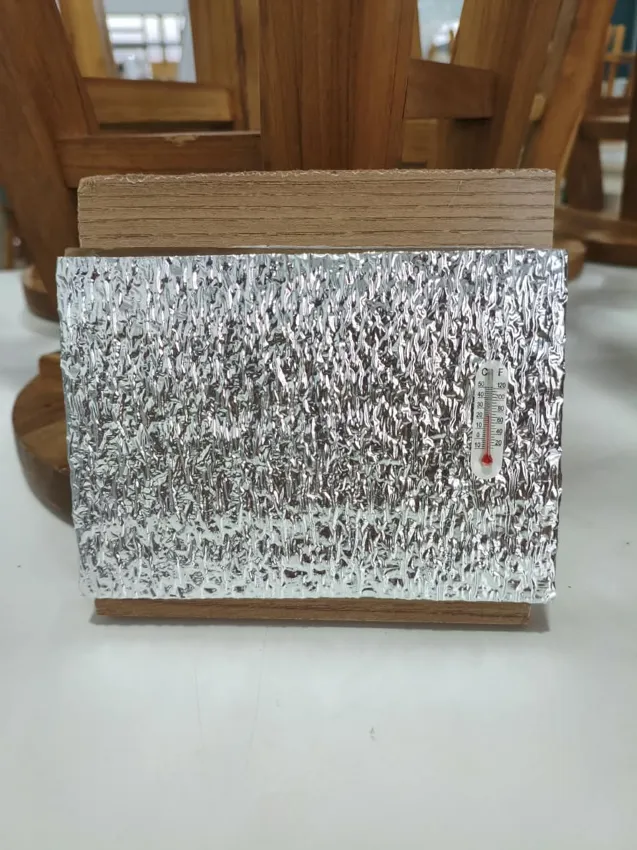
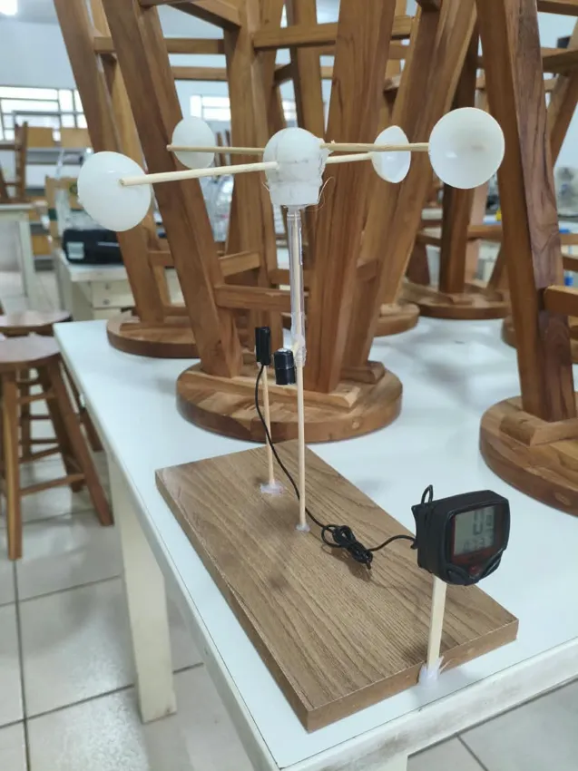
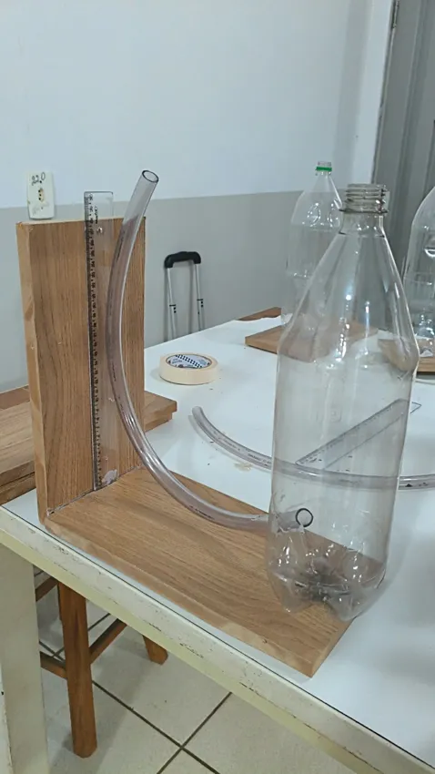

LABORATÓRIO VIVO · GUARDIÕES DO CLIMA
Como está o clima
Como está o clima
na nossa escola?
Veja as medições feitas pela turma e descubra o que os dados mostram.
MEDIÇÕES DA TURMA
Aguardando mediçõesO que os instrumentos mostram?
🌱
As primeiras medições ainda vão chegar.
Quando os Guardiões registrarem os dados, os gráficos vão aparecer aqui.
Ver as últimas medições ＋
Dados coletados na escola. Para comparar lugares, escolha horários e instrumentos semelhantes.
COMPARE E INVESTIGUE
Qual lugar é diferente?
O gráfico mostra a média de cada local. A chuva é um acúmulo por período e não deve ser somada entre locais.
NOSSO LABORATÓRIO
Feitos por nossas próprias mãos.
Toque e arraste os modelos para girá-los. Toque nos nomes para descobrir suas peças.
↔ arraste para girar
01 · TEMPERATURA
Abrigo térmico
Protege o sensor da radiação direta, permitindo comparar temperaturas do ar.

↔ arraste para girar
02 · VENTO
Anemômetro artesanal
As conchas giram com o vento. Com calibração, podemos estimar sua velocidade.

↔ arraste para girar
03 · PRESSÃO
Instrumento de pressão
Montagem experimental com garrafa, mangueira e régua para investigar diferenças de pressão. A leitura requer orientação e calibração.

04 · PRECIPITAÇÃO
Pluviômetro
A chuva também faz parte das medições. Aguardamos a foto do pluviômetro real dos Guardiões para produzir seu modelo interativo fiel.
DESCUBRA COM A CIÊNCIA
O que estamos medindo?
Mostra o quanto o ar está quente ou frio.
Experimente: compare o pátio com a horta.É a força exercida pelo ar sobre uma área.
Observe se ela varia com o tempo.1 mm de chuva equivale a 1 litro por metro quadrado.
Anote o intervalo de cada coleta.Mais conceitos sobre o clima ＋
Indica a quantidade relativa de vapor de água presente no ar.
É o movimento do ar. Pode variar entre lugares próximos.
São as condições climáticas de um espaço pequeno, como uma horta ou uma quadra.
CADERNO DE CAMPO
Registrar uma medição
Para registrar, entre com uma conta autorizada.
Essa parte é para a equipe.
Qualquer pessoa pode ver os gráficos. Para adicionar dados, é preciso entrar.